How to Graph BLLD Using Service Software
To graph Barometric Liquid Level Detect (BLLD) with service software:
-
Start Service Software.
-
Initialize Pipettors, Reagent Bay, and TCR carousel.
-
Click the Pipettor tab, then click the LLD Right Arm tab.
-
Important: Select bar under LLD at lower left.
-
Important: Select Log under LLD at lower left.
-
Enter the number of cycles to run Pipettor under LLD at lower left.
Image below shows ten cycles.
-
Enter TCR bottle number,1 - 8, TCR.
Black arrow in image indicates TCR bottle 1.
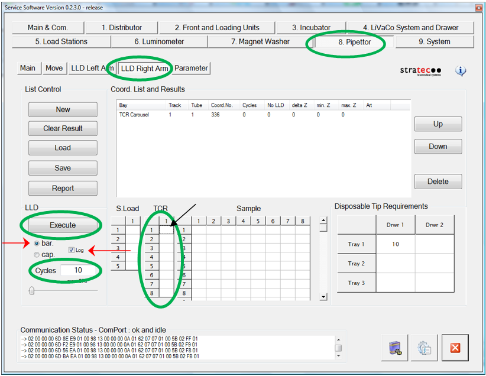
-
Load Sample tips in the tray(s) indicated under Disposable Tip Requirements at the lower right of the Pipettor tab.
In this example, script is asking for 10 sample tips to be loaded in Tray1 and Drawer 1. Refer to image below.
Each new Execute command on the left resets Pipettor to pick from Drawer 1, Tray 1, Position A1.
-
Optional: Load TCR bottle with saline in selected TCR bottle position. Position 1 was selected in this case.
-
Click Execute at lower left to start the script.
Note: A dialog box prompts user if results are to be deleted.
Click Yes to clear data in the red box.
Click No to append new data to existing data.
Either option writes data.
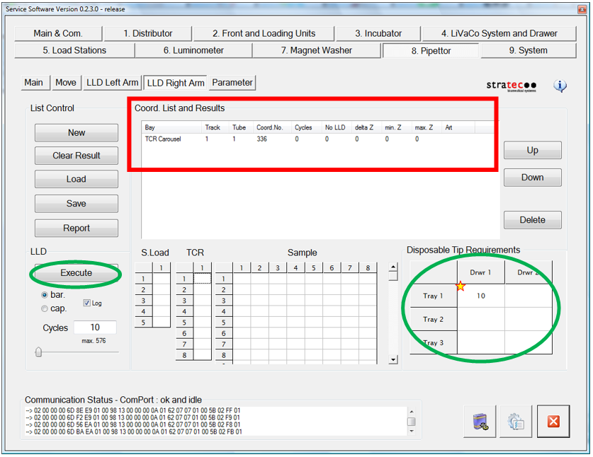
-
The script launches. Sample Pipettor picks a sample tip, then applies Barometric Liquid Level Detect at TCR bottle position 1.
-
When the script completes, it creates files in the following folder: C:\Panther\Panther Service Software\Log\.
- Left/Right-LLD-Values = Record of sensor from z-start until trigger or z-max. Contains barometric and capacitive data.
- Left/Right-LLD-ZPos = summary of level sense heights.
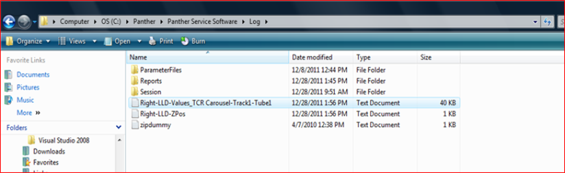
-
Launch Excel application, then open Right-LLD-Values_TCR Carousel-Track1-Tube1.txt file.
Note: To view *.txt or *.log extensions may require changing the file field to All Files (*.*). See red arrow in image below.
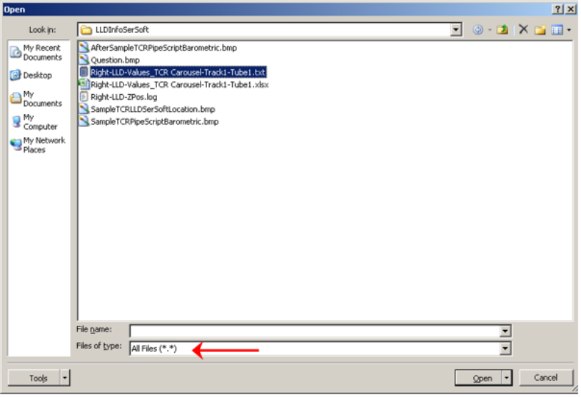
-
Select Delimited under Original data type, then click Next >.
Note: If Excel does not automatically launch the text import wizard, see Appendix A.
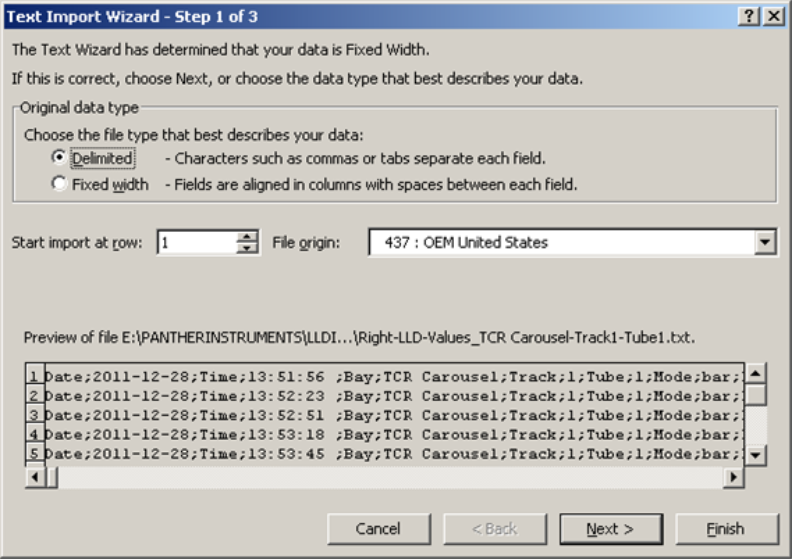
-
In Text Import Wizard, check Semicolon under Delimiters. Tab is checked by default. Click Finish at lower right.
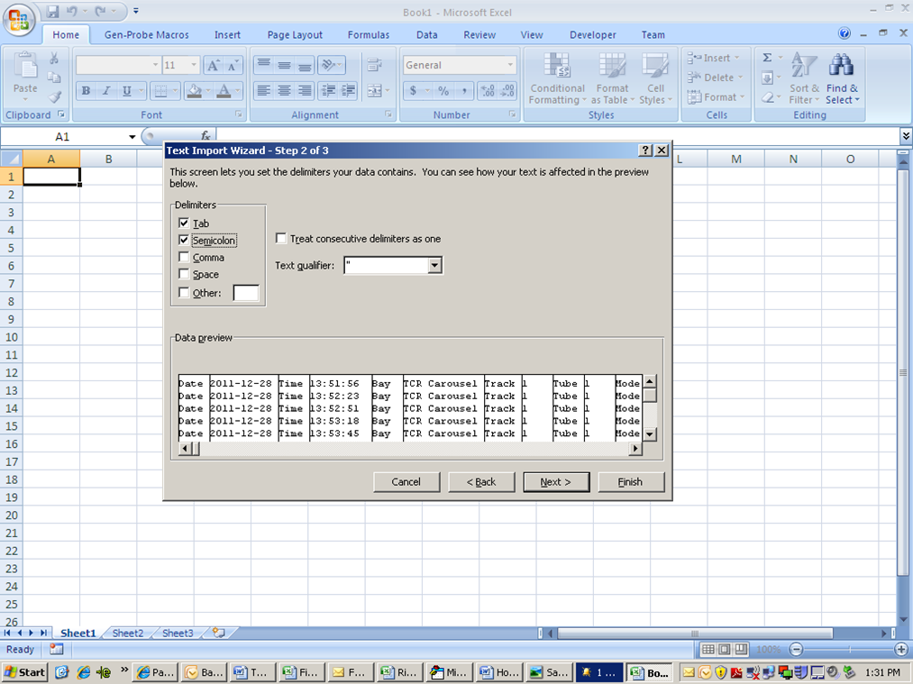
-
If you clicked Next > in step 15, Step 3 of 3 in Text Import Wizard appears. Click Finish.
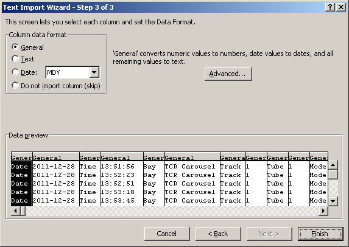
-
Highlight data, starting with column AK.
Tip: To select all data of interest, select AK1 at upper left, then press Ctrl + Shift + End. Refer to image below.
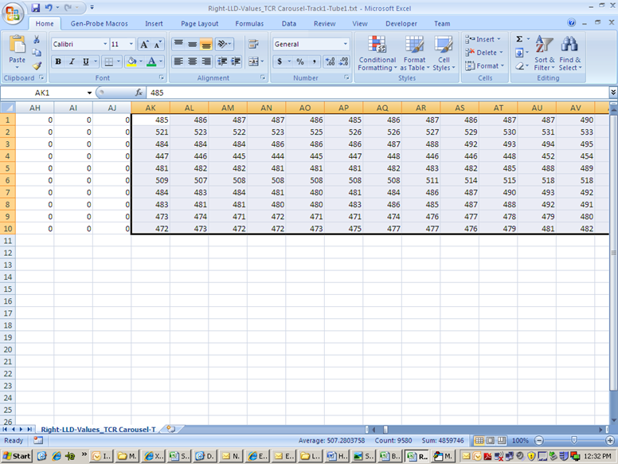
-
Click Insert tab, then select desired type of graph.
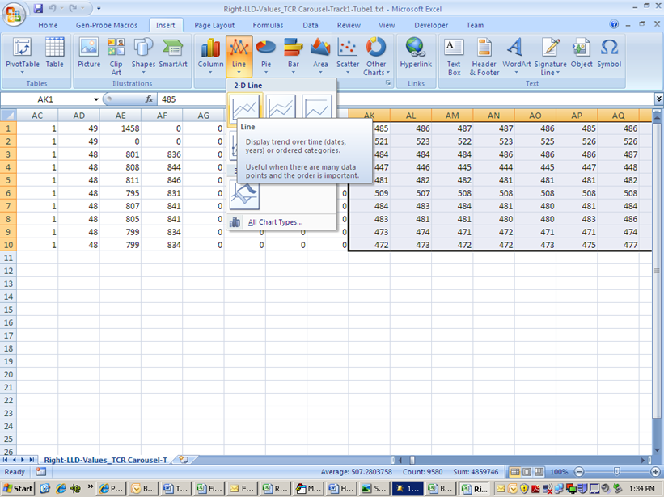
-
Right-click on the graph, then select Move Chart in the ribbon.
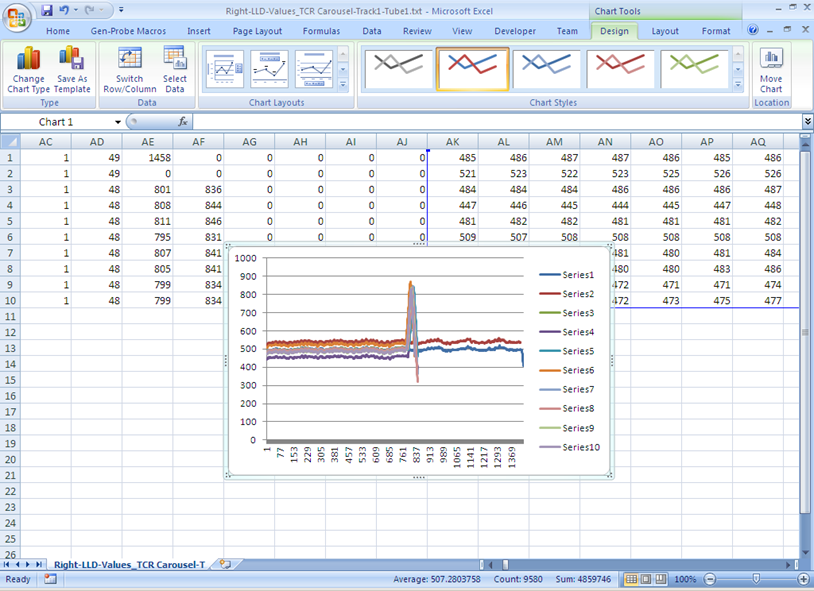
Move Chart dialog appears.
-
Name the new sheet as desired.
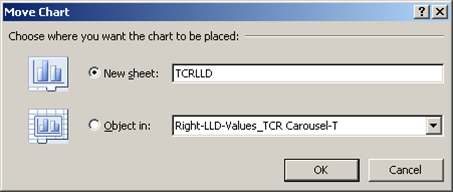
-
Modify curve as desired.
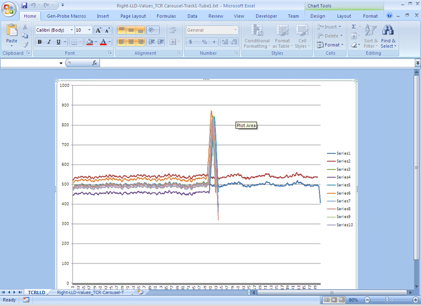
Appendix A – Manually Launch Text to Columns Wizard
To launch Text to Columns wizard manually:
-
Select Data tab in Excel.
-
Select Column A.
When selected, column has a green borders, and is partially grayed out. See step 2 below.
-
Select Text to Columns in the ribbon.
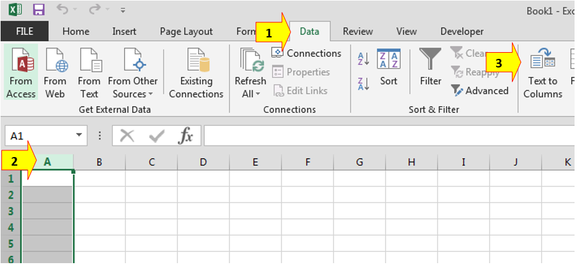
 button at the top of the page to send feedback, comments, or change requests.
button at the top of the page to send feedback, comments, or change requests.